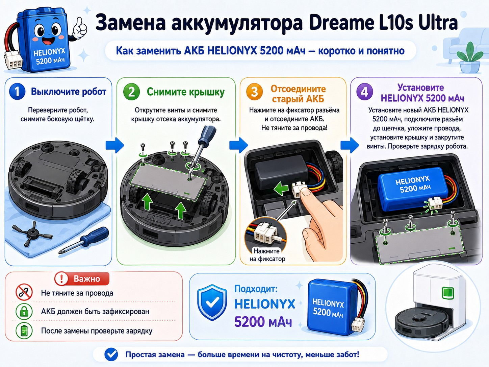

Если Dreame L10s Ultra стал быстро разряжаться, выключается посреди уборки или перестал нормально заряжаться, одной из возможных причин может быть изношенный аккумулятор. Но похожие симптомы также дают грязные зарядные контакты, неисправная база, повреждённый разъём или сбой питания.
Когда подозревать аккумулятор
- время уборки заметно сократилось;
- робот выключается до возвращения на базу;
- процент заряда падает рывками;
- зарядка отображается, но уровень почти не растёт;
- после снятия с базы робот быстро отключается.
Если батарея вздулась, сильно нагревается, пахнет или имеет повреждения, робот нельзя продолжать заряжать и использовать.
Какой аккумулятор подходит для Dreame L10s Ultra
Для Dreame L10s Ultra используется аккумулятор ёмкостью 5200 мАч. Аккумулятор HELIONYX BAT1T5200 предназначен для замены штатной батареи и подходит по ёмкости, назначению и форм-фактору.
Совместимые модели и парт-номера
Этот аккумулятор подходит не только для Dreame L10s Ultra. Совместимость HELIONYX проверена на следующих роботах-пылесосах:
- Dreame F9, Dreame D9, Dreame D9 Max и Dreame D9 Pro;
- Dreame D10S Plus и Dreame D10S Pro;
- Dreame L10S Pro, Dreame L10S Ultra и DreameBot L10 Pro;
- Mijia Sweeping Robot 1T и Mijia Self Mop 2 Pro;
- Mi Robot Vacuum-Mop 2 Pro+ и Mi Robot Vacuum-Mop 2 Ultra;
- Mi Robot Vacuum S10+, Robot Vacuum S20+ и Robot Vacuum X10+.
Проверенные парт-номера аккумуляторов
При поиске замены ориентируйтесь на маркировку старой батареи. Проверенные парт-номера:
P2008-4S2P-MMBK; P2150-4S2P-MMBK; P2150-4S2P-XWDLS; P2150-4S2P-MMEV.
Модельные коды совместимых устройств
На шильдике робота или в приложении модель может быть указана не торговым названием, а кодом. Проверенные коды устройств:
RVS5-WH0; RLS5-WH0; RLD33GA; RLS5-BL0; RLS6AD; RLS6A; RLS6L; RLS6LADC; RLS5L; STYTJ02ZHM; B113CN; STYTJ05ZHMHW; BHR5195EU; BHR6368EU; B105; BHR8158EU; BHR6363EU; B101GL.
Что понадобится
- крестовая отвёртка подходящего размера;
- пластиковая лопатка или медиатор;
- мягкая ткань;
- коробочка для винтов;
- аккумулятор HELIONYX 5200 мАч.
Пошаговая замена
1. Выключите робот
Снимите его с базы, завершите уборку и полностью выключите питание. Уберите мопы, контейнер и другие съёмные детали.
2. Переверните на мягкую поверхность
Положите робот колёсами вверх на полотенце. Не давите на лидар и верхнюю крышку.
3. Снимите боковую щётку
Открутите крепёж боковой щётки и уберите её в сторону.
4. Открутите крышку аккумуляторного отсека
Выкрутите винты, запомните их расположение и аккуратно поднимите крышку. Защёлки освобождайте пластиковой лопаткой.
5. Сфотографируйте старую батарею
Снимите положение аккумулятора, разъёма и проводов. Сверьте парт-номер и код модели со списком выше.
6. Отсоедините разъём
Нажмите фиксатор и тяните за пластиковый корпус штекера, а не за провода.
7. Установите аккумулятор HELIONYX
Подключите штекер до щелчка, уложите батарею без перекоса и разместите провода так, чтобы их не зажало крышкой.
8. Зафиксируйте аккумулятор
Батарея не должна болтаться. Верните штатную прокладку или фиксатор.
9. Соберите робот
Установите крышку, равномерно закрутите винты и верните съёмные детали.

Что сделать после установки
- поставьте робот на базу и убедитесь, что зарядка началась;
- проверьте отсутствие нагрева и запаха;
- дождитесь полного заряда;
- запустите обычную уборку;
- убедитесь, что робот возвращается на базу без отключения.
Почему HELIONYX 5200 мАч — правильный выбор
HELIONYX BAT1T5200 соответствует штатной ёмкости и подходит для замены аккумуляторов с маркировками P2008-4S2P-MMBK, P2150-4S2P-MMBK, P2150-4S2P-XWDLS и P2150-4S2P-MMEV в перечисленных совместимых моделях.
Перед отправкой мы проверяем модель робота, фотографию старой батареи, парт-номер и разъём.

HELIONYX BAT1T5200, 5200 мАч
Для Dreame L10s Ultra и других совместимых моделей. Проверяем маркировку старой батареи и разъём перед отправкой.
Перейти к аккумуляторуЧастые вопросы
Какие парт-номера заменяет HELIONYX BAT1T5200?
P2008-4S2P-MMBK, P2150-4S2P-MMBK, P2150-4S2P-XWDLS и P2150-4S2P-MMEV.
Подходит ли аккумулятор для Dreame D9, F9 и L10 Pro?
Да, эти модели входят в проверенный перечень совместимости. Перед заказом желательно прислать фото старого аккумулятора.
Нужно ли сбрасывать настройки после замены?
Обычно нет. После подключения достаточно полностью зарядить робот.